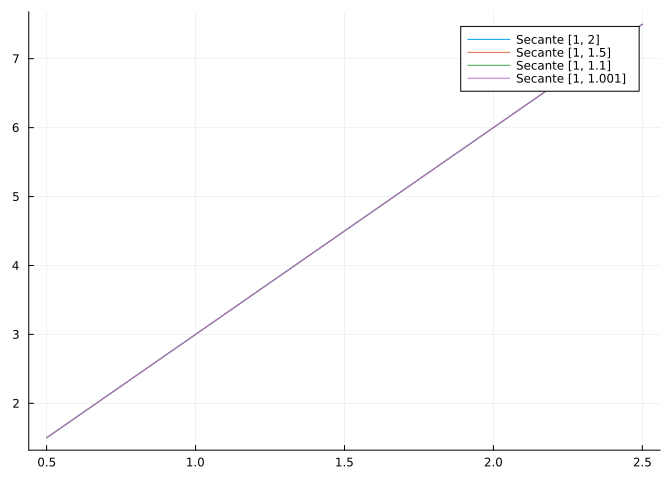
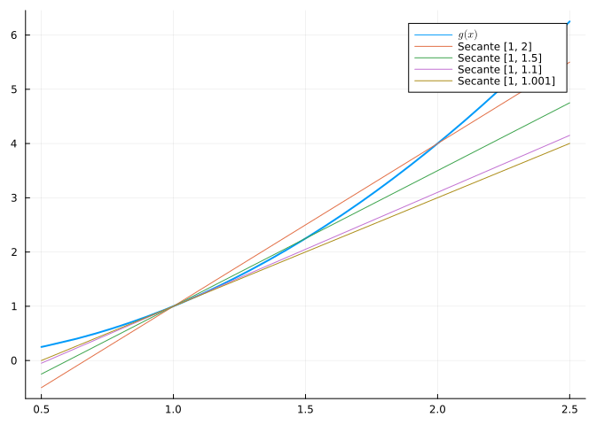
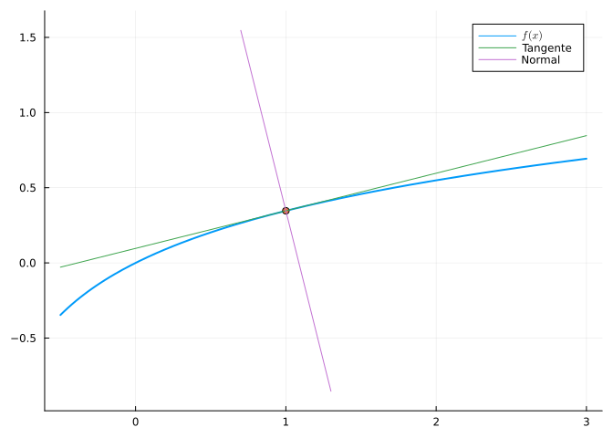

using SymPy # Para el cálculo simbólico de límites y derivadas
using Plots # Para el dibujo de gráficas
using LaTeXStrings # Para usar código LaTeX en los gráficos.Concepto de derivada
Ejercicios Resueltos
Para la realización de esta práctica se requieren los siguientes paquetes:
Ejercicio 1 Calcular la tasa de variación media de las siguientes funciones en los intervalos \([1, 2]\), \([1, 1.5]\), \([1, 1.1]\), \([1, 1.001]\). ¿Depende la tasa de variación media del intervalo?
- \(f(x) = 3x\).
Ayuda
La tasa de variación media de una función \(y = f(x)\) en un intervalo \([a,b]\) se define como
\[\mbox{TVM}f(a,b) = \frac{\Delta y}{\Delta x} = \frac{f(b)-f(a)}{b-a}\]
Solución
# Creamos una función para calcular la tasa de variación media
tvm(f, a, b) = (f(b) - f(a)) / (b - a)
# Creamos la función f
f(x) = 3x
# Calculamos la tasa de variación media de f en cada intervalo dado
println(tvm(f, 1, 2))
println(tvm(f, 1, 1.5))
println(tvm(f, 1, 1.1))
println(tvm(f, 1, 1.001))3.0
3.0
3.0
3.0La tasa de variación media es constante y no depende del intervalo.
- \(g(x) = x^2\).
Solución
# Creamos la función f
g(x) = x ^ 2
# Calculamos la tasa de variación media de f en cada intervalo dado
println(tvm(g, 1, 2))
println(tvm(g, 1, 1.5))
println(tvm(g, 1, 1.1))
println(tvm(g, 1, 1.001))3.0
2.5
2.1
2.0009999999999177La tasa de variación media depende del intervalo.
Ejercicio 2
Dibujar las gráficas de las siguientes funciones y las rectas secantes a ellas en los intervalos \([1, 2]\), \([1, 1.5]\), \([1, 1.1]\), \([1, 1.001]\).
- \(f(x) = 3x\).
Ayuda
La pendiente de la recta secante a una función \(f(x)\) en el intervalo \([a, b]\) es la tasa de variación media de \(f\) en ese intervalo. Así pues, la ecuación de la recta secante a una función \(f(x)\) en el intervalo \([a, b]\) es
\[y = f(a) + \mbox{TVM}f(a,b) (x-a) = f(a) + \frac{f(b)-f(a)}{b-a}(x-a)\]
Solución
# Creamos una función para calcular la ecuación de la recta secante.
secante(f, a, b) = x -> f(a) + (f(b) - f(a)) / (b - a) * (x - a)
# Definimos la función
f(x) = 3x
# Construimos las secantes
s1 = secante(f, 1, 2)
s2 = secante(f, 1, 1.5)
s3 = secante(f, 1, 1.1)
s4 = secante(f, 1, 1.001)
# Dibujamos las gráficas de la función y las secantes
plot(f, 0.5, 2.5, label = L"f(x)", linewidth = 2)
plot([s1, s2, s3, s4], 0.5, 2.5, label = ["Secante [1, 2]" "Secante [1, 1.5]" "Secante [1, 1.1]" "Secante [1, 1.001]"])
Como se puede observar en la imagen, las gráficas de la función y sus secantes coinciden.
- \(g(x) = x^2\).
¿A qué recta se aproximan las rectas secantes a medida que el intervalo se hace menor?
Solución
# Definimos la función
g(x) = x ^ 2
# Construimos las secantes
s1 = secante(g, 1, 2)
s2 = secante(g, 1, 1.5)
s3 = secante(g, 1, 1.1)
s4 = secante(g, 1, 1.001)
# Dibujamos las gráficas de la función y las secantes
plot(g, 0.5, 2.5, label = L"g(x)", linewidth = 2)
plot!([s1, s2, s3, s4], label = ["Secante [1, 2]" "Secante [1, 1.5]" "Secante [1, 1.1]" "Secante [1, 1.001]"])
Como se puede observar en la imagen, ahora las gráficas de la función y sus secantes no coinciden ya que la tasa de variación media de \(g\) en cada intervalo es distinta.
Por otro lado, se observa que a medida que el intervalo se hace menor, la recta secante se aproxima cada vez más a la recta tangente a \(g\) en el punto \(x=1\).
Ejercicio 3
Calcular la tasa de variación instantánea en los puntos \(x=1\), \(x=2\) y \(x=3\) de las siguientes funciones:
- \(f(x) = 3x\).
Ayuda
La tasa de variación instantánea de una función \(y = f(x)\) en el punto \(x=a\) se define como
\[ \mbox{TVI}f(a) = \lim_{\Delta x\rightarrow 0}\mbox{TVM}f(a,a+\Delta x) = \lim_{\Delta x\rightarrow 0}\frac{f(a+\Delta h)-f(a)}{\Delta x}.\]
Recordemos que cuando existe, la tasa de variación instantánea es la derivada de la función en el punto.
Solución
@syms h::real
# Creamos una función para calcular la tasa de variación instantánea
tvi(f, a) = limit((f(a + h) - f(a)) / h, h => 0)
# Creamos la función f
f(x) = 3x
# Calculamos la tasa de variación instantánea de f los puntos dados
println(tvi(f, 1))
println(tvi(f, 2))
println(tvi(f, 3))3
3
3La tasa de variación instantánea es constante y no depende del punto. Es por ello que la derivada de la función \(f\) es constante y vale \(f'(x) = 3\).
- \(g(x) = x^2\).
Solución
@syms h::real
# Creamos una función para calcular la tasa de variación instantánea
tvi(f, a) = limit((f(a + h) - f(a)) / h, h => 0)
# Creamos la función f
g(x) = x^2
# Calculamos la tasa de variación instantánea de f los puntos dados
println(tvi(g, 1))
println(tvi(g, 2))
println(tvi(g, 3))2
4
6La tasa de variación instantánea no es constante y depende del punto, al igual que la derivada que vale \(g'(x) = 2x\).
Ejercicio 4
Utilizando la definición de derivada, estudiar la derivabilidad de las siguientes funciones en los puntos dados.
- \(f(r) = \pi r^2\) en \(r=1\).
Ayuda
La derivada de una función \(f(x)\) en un punto \(x=a\) se define como
\[f'(a) = lim_{h\rightarrow 0}\frac{f(a+h)-f(a)}{h}.\]
Solución
@syms h::real
# Creamos dos funciones para la derivada por la izquierda y por la derecha
derivadaI(f, a) = limit((f(a + h) - f(a)) / h, h => 0, dir = "-")
derivadaD(f, a) = limit((f(a + h) - f(a)) / h, h => 0, dir = "+")
# Creamos la función f
f(r) = PI * r ^ 2
println("Derivada por la izquierda: ", derivadaI(f, 1))
println("Derivada por la derecha: ", derivadaD(f, 1))Derivada por la izquierda: 2*pi
Derivada por la derecha: 2*piComo las derivadas por la izquierda y por la derecha coinciden, la función \(f\) es derivable en \(r=1\) y su derivada vale \(f'(1)=2\pi\).
- \(g(x) = |x-1|\) en \(x=1\).
Solución
# Creamos la función g
g(x) = abs(x - 1)
println("Derivada por la izquierda: ", derivadaI(g, 1))
println("Derivada por la derecha: ", derivadaD(g, 1))Derivada por la izquierda: -1
Derivada por la derecha: 1Como las derivadas por la izquierda y por la derecha difieren, la función \(g\) no es derivable en \(x=1\).
Ejercicio 5
Calcular la derivada de las siguientes y dar una interpretación en términos físicos o geométricos.
- Área del círculo: \(a(r) = \pi r^2\).
Ayuda
Usar la función diff(f) para calcular la derivada de la función f.
La derivada es la tasa variación instantánea de la variable dependiente con respecto a la independiente de la función.
Solución
@vars r
area(r) = PI * r ^ 2
println("Derivada: ", diff(area(r)))Derivada: 2*pi*rComo \(a'(r) = 2\pi r\) que es el perímetro de la circunferencia de radio \(r\), se puede concluir que la tasa de variación instantánea que experimenta el área de un círculo de radio r es su perímetro.
- Espacio recorrido por un cuerpo en caída libre: \(e(t) = a_0 - \frac{1}{2}g_0t^2\),
Donde \(a_0\) es la altura inicial y \(g_0\) es la aceleración de la gravedad, ambas constantes positivas.
Solución
using SymPy
@syms a₀ g₀ t
espacio(t) = a₀ - g₀ * t ^ 2 / 2
println("Derivada: ", diff(espacio(t), t))Derivada: -g₀*tComo la derivada \(e'(t) = -g_0t\) es negativa, en cada instante \(t\) el espacio decrece con una velocidad instantánea igual a al gravedad por el instante \(t\), y por tanto, cuanto más tiempo pasa, mas rápidamente decrece el espacio.
Ejercicio 6
Calcular y dibujar las rectas tangente y normal a la gráfica de la función $f(x) = () en \(x=1\).
Ayuda
La ecuación de la recta tangente a la función \(y = f(x)\) en \(x=a\) es
\[ y = f(a) + f'(a) (x-a)\]
Y la ecuación de la recta normal a la función \(y = f(x)\) en \(x=a\) es
\[ y = f(a) - \frac{1}{f'(a)} (x-a)\]
Solución
using SymPy, Plots, LaTeXStrings
@syms x
# Definimos la función
f(x) = ln(sqrt(x + 1))
# Calculamos la ecuación de la recta tangente
tan(x) = f(x)(x => 1) + diff(f(x))(x => 1) * (x - 1)
println("Tangente: ", tan(x))
# Calculamos la ecuación de la recta normal
nor(x) = f(x)(x => 1) - 1 / diff(f(x))(x => 1) * (x - 1)
println("Normal: ", nor(x))
# Dibujamos las gráficas de la función, la tangente y la normal
plot(f(x), -0.5, 3, label = L"f(x)", linewidth = 2, aspect_ratio = :equal)
scatter!([1], [f(x)(x => 1)], label = "")
plot!(tan(x), label = "Tangente")
plot!(nor(x), 0.7, 1.3, label = "Normal")Tangente: x/4 - 1/4 + log(sqrt(2))
Normal: -4*x + log(sqrt(2)) + 4
Ejercicio 7
Calcular las derivadas de las siguientes funciones hasta el orden 4 y deducir la expresión de la derivada de orden \(n\).
- \(f(x) = a^x\).
Ayuda
Usar la función diff(f, n) para calcular la derivada de orden n de la función f.
Solución
@syms a::real
f(x) = a ^ x
println("Primera derivada: ", diff(f))
println("Segunda derivada: ", diff(f, 2))
println("Tercera derivada: ", diff(f, 3))
println("Cuarta derivada: ", diff(f,4))Primera derivada: a^x*log(a)
Segunda derivada: a^x*log(a)^2
Tercera derivada: a^x*log(a)^3
Cuarta derivada: a^x*log(a)^4Se puede deducir que la derivada de orden \(n\) será \(f^n(x)=a^x\ln(a)^n\).
- \(g(x) = \frac{\sin(x)+\cos(x)}{2}\).
Solución
g(x) = (sin(x) + cos(x)) / 2
println("Primera derivada: ", diff(g))
println("Segunda derivada: ", diff(g, 2))
println("Tercera derivada: ", diff(g, 3))
println("Cuarta derivada: ", diff(g,4))Primera derivada: -sin(x)/2 + cos(x)/2
Segunda derivada: -(sin(x) + cos(x))/2
Tercera derivada: (sin(x) - cos(x))/2
Cuarta derivada: (sin(x) + cos(x))/2Como la cuarta derivada coincide con la función original, se puede deducir que la derivada de orden \(n\) será
\[ \DeclareMathOperator{\sen}{sen} g^n(x)= \begin{cases} \frac{\sen(x)+\cos(x)}{2} & \mbox{si $x=4k$} \\ \frac{\cos(x)-\sen(x)}{2} & \mbox{si $x=4k+1$} \\ \frac{-\sen(x)-\cos(x)}{2} & \mbox{si $x=4k+2$} \\ \frac{-\cos(x)+\sen(x)}{2} & \mbox{si $x=4k+3$} \\ \end{cases} \quad \mbox{con $k\in \mathbb{Z}$} \]